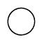

СИСТЕМА КОНДИЦИОНИРОВАНИЯ (для моделей с кондиционером с ручным управлением) > ОПИСАНИЕ СИСТЕМЫ |
| ОБЩИЕ СВЕДЕНИЯ |
Система кондиционирования выполняет следующие функции управления.
| Управление | Описание | |
| Ручная регулировка | Блок управления системой кондиционирования управляет положением заслонок (входной заслонки, смесительной заслонки и заслонки распределения потоков воздуха) и частотой вращения вентилятора в соответствии с положениями переключателей (шкалы регулятора температуры, шкалы вентилятора, переключателя распределения потоков воздуха и переключателя REC/FRS). | |
| Управление забором воздуха | Система управляет серводвигателем заслонки рециркуляции воздуха в салоне в соответствии с положением переключателя REC/FRS и перемещает заслонки в положение впуска наружного воздуха или рециркуляции. | |
| Управление компрессором | Блок управления системой кондиционирования сравнивает сигналы частоты вращения шкива кондиционера, передаваемые блоком ECM (датчиком положения коленчатого вала). Когда блок управления системой кондиционирования обнаруживает, что шкив кондиционера заблокирован, он выключает электромагнитную муфту. | |
| Управление оттаивателями | Для улучшения характеристик оттаивателя используется логическая схема управления оттаивателем. | |
| Управление переключением на режим впуска наружного воздуха для оттаивателя | Управление переключением на режим впуска наружного воздуха для оттаивателя переключает систему с режима рециркуляции на режим впуска наружного воздуха для повышения характеристик оттаивателя. | |
| Управление обогревателем заднего стекла | Если при включенном зажигании нажимается выключатель обогревателя заднего стекла, система примерно на 15 минут включает обогреватель стекла. При этом, если выполняются оба перечисленных ниже условия, время работы обогревателя заднего стекла может быть увеличено примерно до 255 мин.:
| |
| Диагностика | Когда блок управления системой кондиционирования обнаруживает неисправность в системе кондиционирования, в памяти сохраняется диагностический код неисправности (DTC). | |
| РЕЖИМЫ ПОДАЧИ ВОЗДУХА И ПОЛОЖЕНИЯ ЗАСЛОНОК |
Режимы подачи воздуха и положения заслонок
Передняя установка кондиционирования воздуха
| Управляющая заслонка | Режим работы | Положение заслонки | Принцип работы |
| Входная заслонка | Свежий воздух | А | Обеспечивает подачу в салон наружного воздуха. |
| Рециркуляция | B | Обеспечивает рециркуляцию воздуха в салоне. | |
| Смесительная заслонка | От MAX COOL до MAX HOT | E - D - C | Изменяет соотношение холодного и горячего воздуха, непрерывно регулируя температуру от максимального обогрева до максимального охлаждения. |
| Заслонка MAX COOL | MAX COOL | В | Открыта, в положении MAX COOL. |
| Кроме MAX COOL | W | Закрыта, в любом положении, кроме MAX COOL. | |
| Заслонка MAX HOT | MAX HOT | Y | Открыта, в положении MAX HOT. |
| За исключением MAX HOT | X | Закрыта, в любом положении, кроме MAX HOT. | |
| Заслонка распределения потоков воздуха | Face | F, I, N, T, X | Воздух подается через передние центральные воздуховоды с дефлектором, боковые воздуховоды с дефлектором и задние воздуховоды с дефлектором на уровне лица. |
Bi-level | G, L, N, T, X | Воздух подается через передние центральные воздуховоды с дефлектором, боковые воздуховоды с дефлектором, задние воздуховоды с дефлектором на уровне лица и воздуховоды с дефлектором в передней и задней выемках для ног. | |
Foot | H, M, P, T, W, Y (положение MAX HOT) H, M, O, T, X (кроме положения MAX HOT) | Воздух подается через воздуховоды с дефлектором в передней и задней выемках для ног. Незначительный поток воздуха подается через передний оттаиватель, боковые воздуховоды с дефлектором, передние центральные воздуховоды с дефлектором и задние воздуховоды с дефлектором на уровне лица. | |
Foot/Def | H, K, R, T, W, Y (положение MAX HOT) H, M, Q, T, X (кроме положения MAX HOT) | Обеспечивает оттаивание ветрового стекла, подавая теплый воздух через передний оттаиватель и боковые центральный и воздуховоды с дефлектором; кроме того, воздух выпускается через воздуховоды с дефлектором в передней и задней выемках для ног. Незначительный поток воздуха выпускается через передние центральные воздуховоды с дефлектором и задние воздуховоды с дефлектором на уровне лица. | |
Def | H, I, S, U, X | Обеспечивает оттаивание ветрового стекла, подавая воздух через передние оттаиватели. |
Задний кондиционер (для моделей с задней системой кондиционирования)

| Управляющая заслонка | Режим работы | Положение заслонки | Принцип работы |
| Заслонка распределения потоков воздуха | Face | А | Воздух подается через воздуховоды с дефлектором в задней части крыши. |
Bi-level | B | Воздух подается через воздуховоды с дефлектором в задней части крыши и задние боковые воздуховоды с дефлектором. | |
Foot | C | Воздух подается через задние боковые воздуховоды с дефлектором. | |
| Смесительная заслонка | Уставка температуры от MAX COLD (макс. охлаждение) до MAX HOT (макс. обогрев) | D, E | Изменяет соотношение холодного и горячего воздуха, непрерывно регулируя температуру от максимального обогрева до максимального охлаждения. |
| ВОЗДУХОВЫПУСКНЫЕ ОТВЕРСТИЯ И ВОЗДУХОРАСПРЕДЕЛЕНИЕ |
Воздуховыпускные отверстия и воздухораспределение
для передних воздуховодов с дефлектором
| Индикация (режим) | Передний центральный воздуховод с дефлектором | Боковой воздуховод с дефлектором | Воздуховод с дефлектором в передней выемке для ног | Задний воздуховод с дефлектором на уровне лица | Воздуховод с дефлектором в задней выемке для ног | Передний оттаиватель |
| А | B | C | D | E | F | |
Face |  | - | - | - | ||
Bi-level |  | | | - | ||
Foot |  | | | | | |
Foot/Def | | | | | | |
Def | - | - | - | - | - |
для задних воздуховодов с дефлектором (для моделей с задней системой кондиционирования)
| Индикация (режим) | Воздуховод с дефлектором в задней части крыши | Задний боковой воздуховод с дефлектором |
| А | B | |
Face | - | |
Bi-level | | |
Foot | - | |
| ДАТЧИК БЛОКИРОВКИ СИСТЕМЫ КОНДИЦИОНИРОВАНИЯ (за исключением моделей с двигателем 5L-E) |
| ТЕРМИСТОР СИСТЕМЫ КОНДИЦИОНИРОВАНИЯ № 1 |
| ВЕНТИЛЯТОР С ЭЛЕКТРОДВИГАТЕЛЕМ В СБОРЕ |
| ЖГУТ ПРОВОДОВ СИСТЕМЫ КОНДИЦИОНИРОВАНИЯ (РАЗЪЕМ ШИНЫ) |
В соединении жгута проводов, связывающем сервопривод с блоком управления системой кондиционирования, используется разъем шины (BUS).

| Тип разъема | Куда подсоединить |
| *1: Разъем шины | Сервопривод левой заслонки (сервопривод заслонки распределения потоков воздуха) |
| *2: Разъем шины | Сервопривод правой заслонки в сборе (сервопривод смесительной заслонки) |
| *3: Разъем шины | Сервопривод заслонки рециркуляции воздуха в салоне в сборе |
| *4: Разъем шины | Блок управления системой кондиционирования в сборе |
| *5: Разъем | Термистор системы кондиционирования № 1 |
В каждый разъем шины встроена ИС связи/управления, которая обменивается данными с разъемами всех сервоприводов, приводит в действие серводвигатель и выполняет функцию определения положения.
| СЕРВОПРИВОД |
В сервоприводе с импульсным управлением для определения относительного положения электродвигателя используются 2-битные двухуровневые сигналы.
Количество оборотов электродвигателя в прямом и обратном направлениях определяется по двум сигналам, A и B, которые образуют четыре кодовых комбинации. Блок управления системой кондиционирования подсчитывает число импульсных кодовых комбинаций и, таким образом, оценивает положение останова.
| ТЕРМИСТОР СИСТЕМЫ КОНДИЦИОНИРОВАНИЯ (ДАТЧИК ТЕМПЕРАТУРЫ ОКРУЖАЮЩЕГО ВОЗДУХА) |